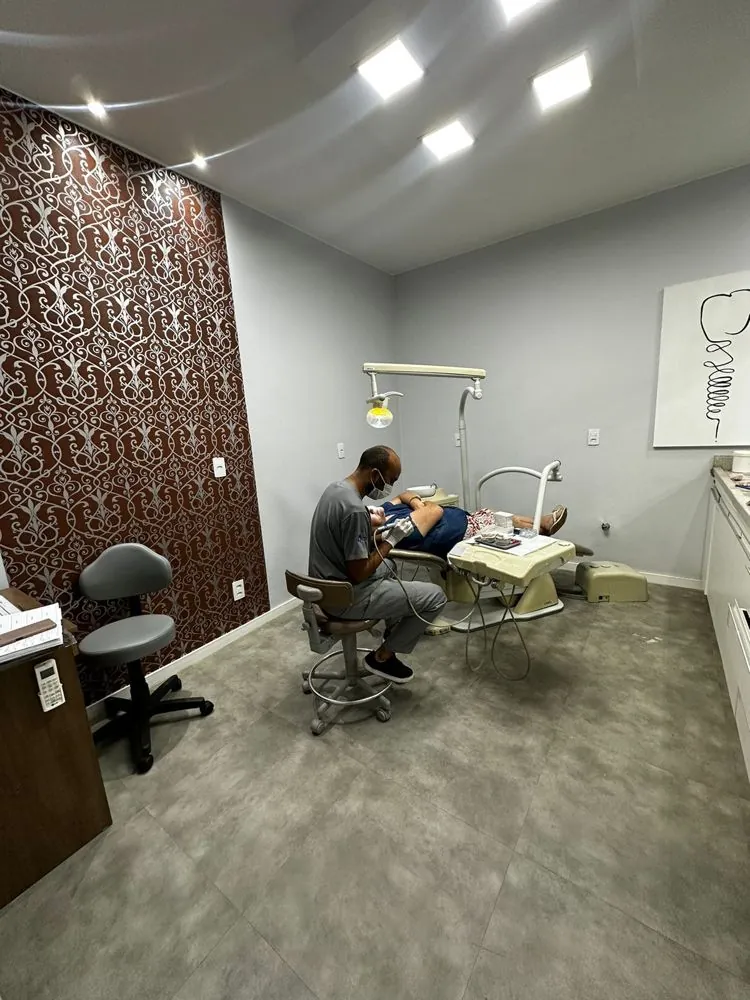
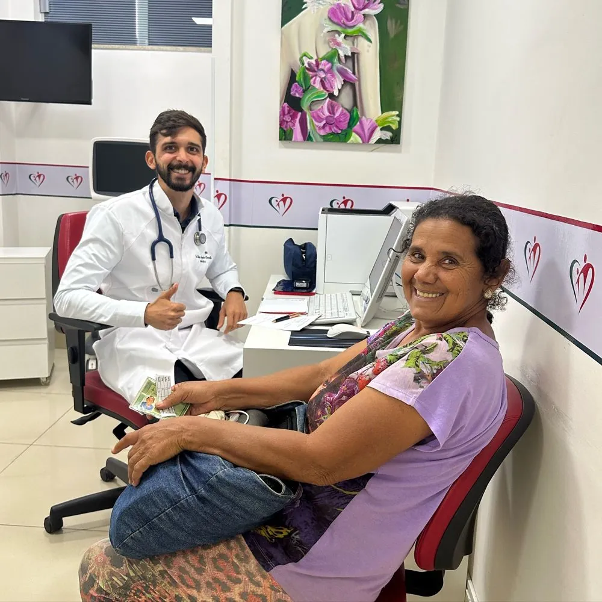
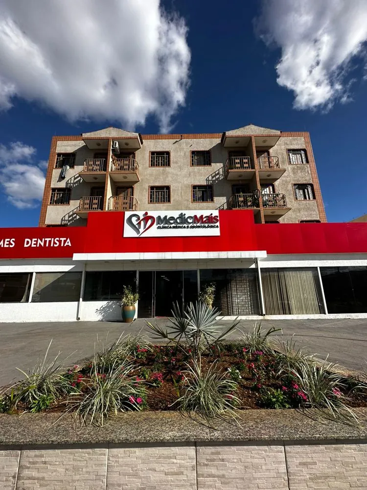
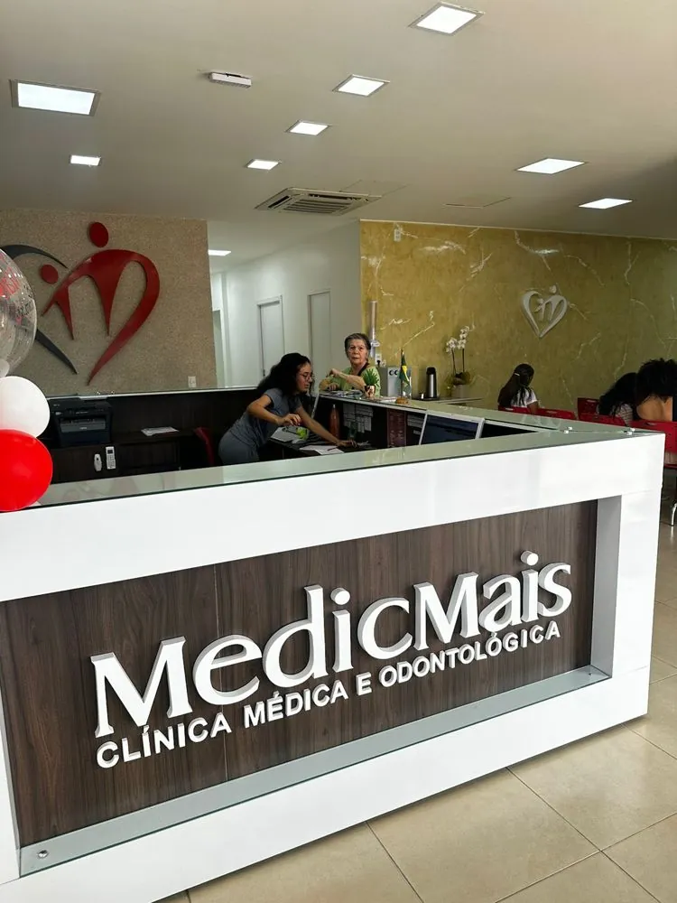
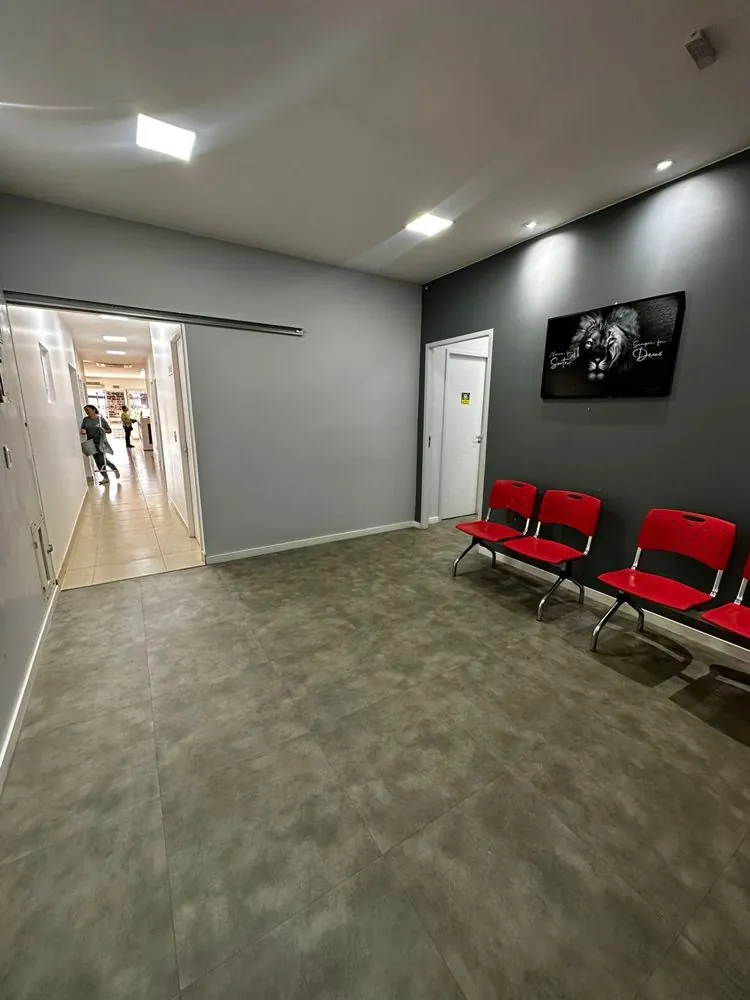
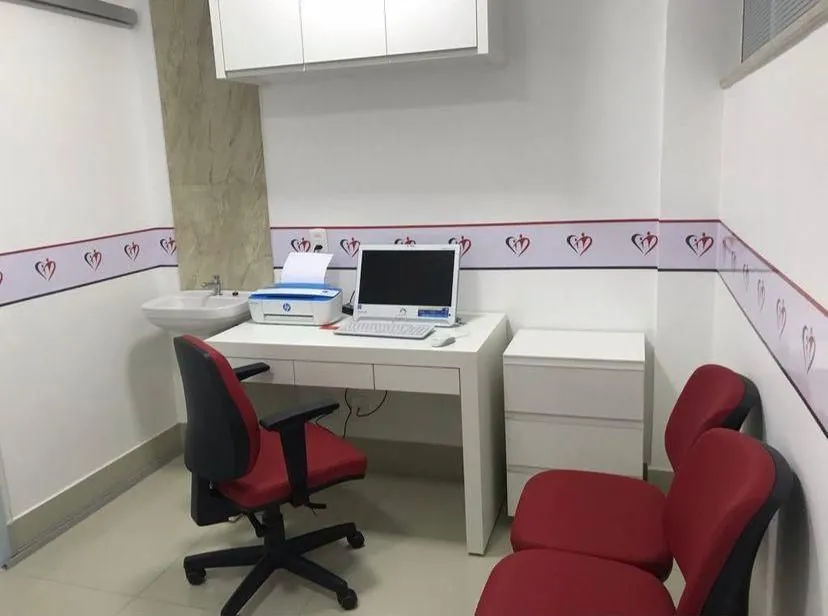

Médico, dentista e exames no mesmo lugar, em Sobradinho-DF.
Agendar pelo WhatsAppou ligue: (61) 99825-5551






Uma vez por mês a clínica abre as portas para a comunidade: médico, dentista, pediatria, ginecologia, massagem e diversão para as crianças.
“Melhor clínica de Sobradinho!”
Comentário no Instagram da clínica“Nesta eu confio de olhos fechados.”
Comentário no Instagram da clínica“O melhor clínico/gineco que já conheci! Não largo mais e super indico!”
Comentário no Instagram da clínica